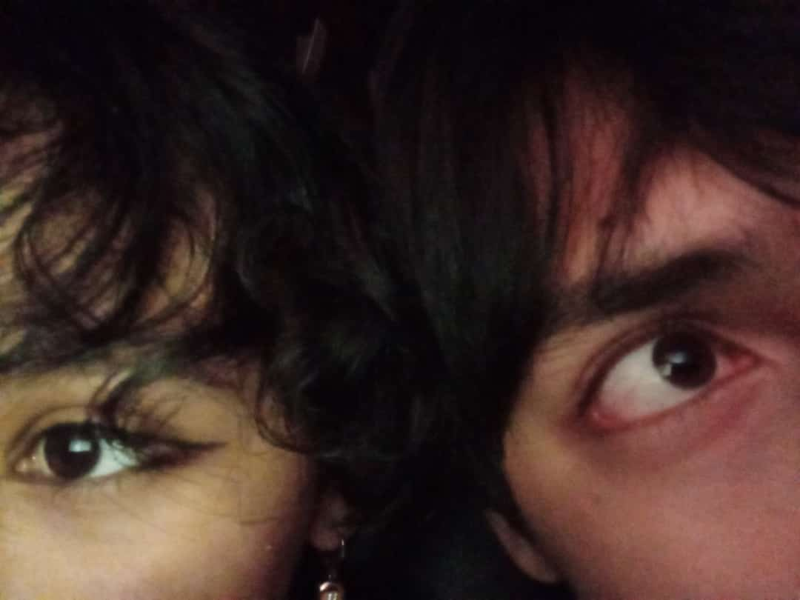
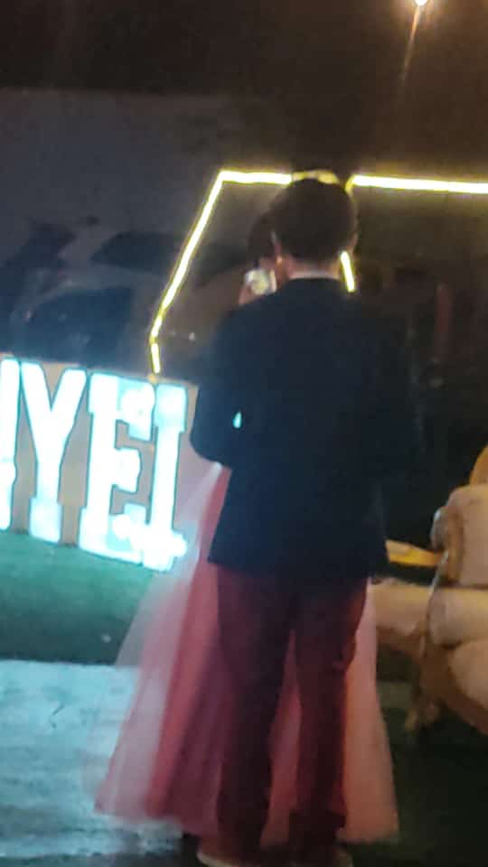
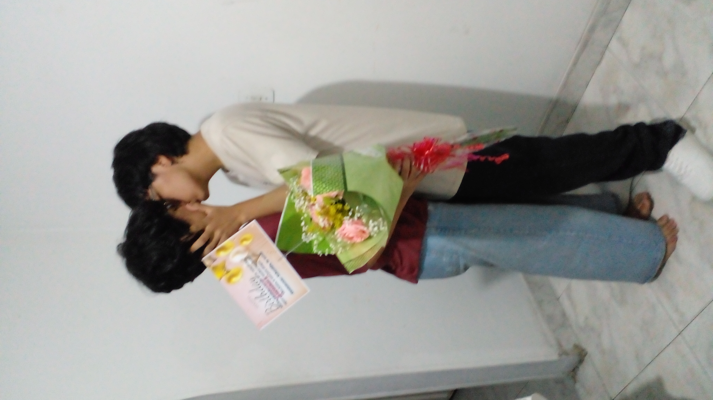

Querida Anyeely, mi pastelito hermoso,
Hoy celebramos nuestro aniversario y quiero dedicarte esta página especial llena de recuerdos.
Nuestros momentos juntos

Ese día fue tan hermoso porque nos vimos en la biblioteca, me encantó verte con ese vestido tan hermoso, tan lindo porque destaca todo lo bello de tu cuerpo. Abrazarte por la espalda y poder darte besitos en el cuello es tan lindo.

Mis manos en el lugar donde siempre deben estar.
Los ojos de dos enamorados, me encanta esta foto, me encantan tus ojos
El dia de tus XV años fue tan bonito, me encanto verte con ese vestido todo precioso, tu tiara y tus joyas que te hacian ver como una princesa muy bonita, y esa princesa bonita es mi novia.
Me encanto verte emocionada con las flores y tomarnos una foto tan bonita
ㅤㅤㅤㅤㅤㅤㅤㅤㅤㅤㅤㅤㅤㅤㅤㅤㅤㅤㅤㅤㅤㅤㅤㅤㅤㅤㅤㅤㅤㅤㅤㅤㅤㅤㅤㅤㅤㅤㅤㅤㅤㅤㅤㅤㅤㅤㅤㅤㅤㅤㅤㅤㅤㅤ ㅤㅤㅤㅤㅤㅤㅤㅤㅤㅤㅤㅤㅤㅤㅤㅤㅤㅤㅤㅤㅤㅤㅤㅤㅤㅤㅤㅤㅤㅤㅤㅤㅤㅤㅤㅤㅤㅤㅤㅤㅤㅤㅤㅤㅤㅤㅤㅤㅤㅤㅤㅤㅤ ㅤㅤㅤㅤㅤㅤㅤㅤㅤㅤㅤㅤㅤㅤㅤㅤㅤㅤㅤㅤㅤㅤㅤㅤㅤㅤㅤㅤㅤㅤㅤㅤㅤㅤㅤㅤㅤㅤㅤㅤㅤㅤㅤㅤㅤㅤㅤㅤㅤㅤㅤㅤㅤㅤ ㅤㅤㅤㅤㅤㅤㅤㅤㅤㅤㅤㅤㅤㅤㅤㅤㅤㅤㅤㅤㅤㅤㅤㅤㅤㅤㅤㅤㅤㅤㅤㅤㅤㅤㅤㅤㅤㅤㅤㅤㅤㅤㅤㅤㅤㅤㅤㅤㅤㅤㅤㅤㅤㅤㅤㅤㅤㅤㅤㅤㅤㅤㅤㅤㅤㅤㅤㅤㅤㅤㅤㅤㅤㅤㅤㅤㅤㅤㅤㅤㅤㅤㅤㅤㅤㅤㅤㅤㅤㅤㅤㅤㅤㅤㅤㅤㅤㅤㅤㅤㅤㅤ ㅤㅤㅤㅤㅤㅤㅤㅤㅤㅤㅤㅤㅤㅤㅤㅤㅤㅤㅤㅤㅤㅤㅤㅤㅤㅤㅤㅤㅤㅤㅤㅤㅤㅤㅤㅤㅤㅤㅤㅤㅤㅤㅤㅤㅤㅤㅤㅤㅤㅤㅤㅤㅤ ㅤㅤㅤㅤㅤㅤㅤㅤㅤㅤㅤㅤㅤㅤㅤㅤㅤㅤㅤㅤㅤㅤㅤㅤㅤㅤㅤㅤㅤㅤㅤㅤㅤㅤㅤㅤㅤㅤㅤㅤㅤㅤㅤㅤㅤㅤㅤㅤㅤㅤㅤㅤㅤㅤ ㅤㅤㅤㅤㅤㅤㅤㅤㅤㅤㅤㅤㅤㅤㅤㅤㅤㅤㅤㅤㅤㅤㅤㅤㅤㅤㅤㅤㅤㅤㅤㅤㅤㅤㅤㅤㅤㅤㅤㅤㅤㅤㅤㅤㅤㅤㅤㅤEspero que esta pequeña página te haga sonreír y recuerdes todos los momentos especiales que hemos compartido.
Te amo demasiado, quiero compartir toda la vida contigo, ser tu fiel compañero en todos tus buenos y malos momentos amarte tanto tanto que no pueda aguantar tanto amor dentro de mi.
simplemente soy tu dueño y tu eres mía como soy tuyo es lo unico que le exijo a la vida que eso nunca cambie, puedo soportar tantas ausencias y carencias en la vida pero la unica que acabaria conmigo seria que ya no me amaras y que ya no estuvieras conmigo.
La mejor canción, la mas significativa la que más me importa del mundo la que te quiero cantar todos los dias abrazandote, cuando te vayas a dormir, la que quiero bailar con mi esposa la que habla del sueño mas ansiado de mi vida, la de irme contigo a ser felices, a vivir juntos, simplemente, nuestra canción.